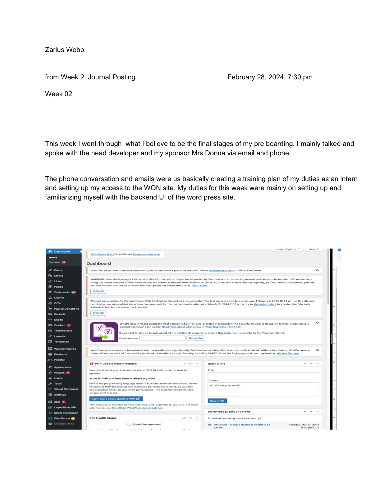
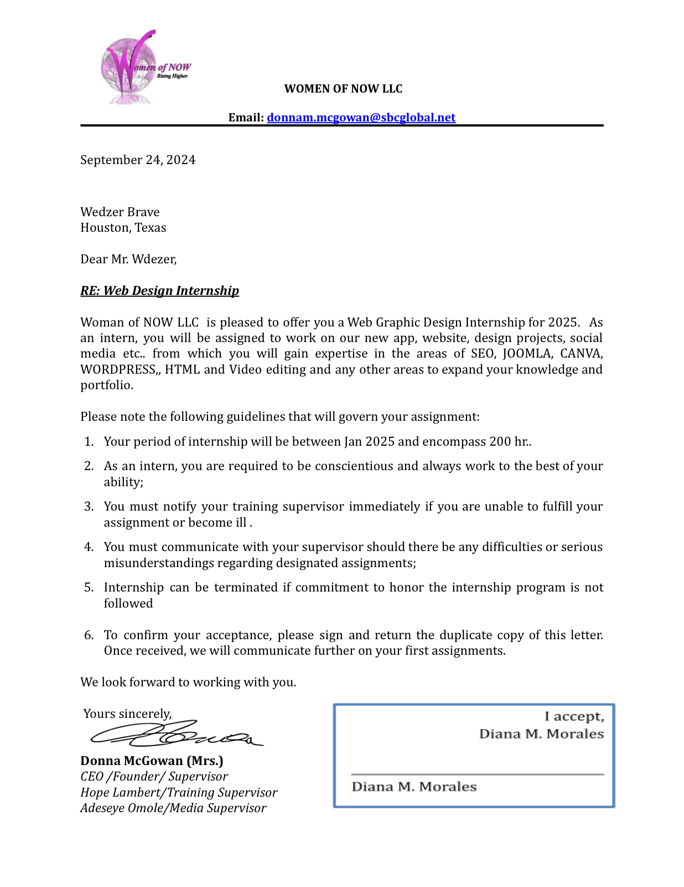

During my internship with Women of Now LLC, I helped design and build a landing page for the organization's Bible study program, including the "7 Weeks of Courage" content experience. The work combined WordPress site administration, layout design, content planning, stakeholder feedback, and mission-focused visual choices for a women-centered outreach project.
A landing page built around encouragement, clarity, and outreach.
What the project does
The page introduces Women of Now's Bible study program and presents the "7 Weeks of Courage" journey in a simple, scannable format. It helps visitors understand the program themes, the type of content members will study, and the faith-based purpose behind the experience.
My contribution
I worked through pre-boarding, gained access to the WordPress backend, reviewed the existing site structure, designed content sections, created rows of boxed learning topics, and adjusted page visuals after feedback from Mrs. Donna and the team.
Why it mattered
Women of Now's mission focuses on encouragement, empowerment, and support for women. The landing page needed to feel welcoming while still giving the organization a professional digital touchpoint for outreach and program communication.
Process
From onboarding to design revisions.
Week 2
Pre-boarding and backend setup
I coordinated with the head developer and my sponsor, Mrs. Donna, through email and phone calls. This stage focused on creating a training plan, setting up access, and learning the backend UI of the Women of Now WordPress site.
March 10, 2024
Designing sections 4 and 5
I continued work on the landing page by designing rows of content for the "7 Weeks of Courage" section. The goal was to make the study topics clear by using simple boxed layouts tied to examples and passages from the Bible.
March 11, 2024
Feedback and media direction
In a review call, we discussed page progress and suggested changes. Mrs. Donna provided additional media and emphasized a multicolor visual direction with images featuring women from different cultures.
What I Learned
Real project habits beyond the page design.
WordPress workflow
Navigating an existing WordPress backend
Understanding plugins, page structure, and admin tools
Working within a live organization's site environment
Client communication
Clarifying tasks through calls and email
Turning stakeholder feedback into design changes
Balancing mission, content, and visual direction
Content design
Breaking program information into clear sections
Designing repeatable boxes for study topics
Using imagery and color to support a welcoming tone
The journal entry documents the boxed topic layout, the goal of outlining what members will learn, and the feedback process around color and inclusive media.

WordPress onboarding
Early internship work focused on access, training, and becoming comfortable with the WordPress backend.

Internship scope
The internship covered website work, design projects, social media, SEO, WordPress, HTML, and related portfolio-building skills.
Links
View the finished page and source code.
The live page is hosted through GitHub Pages, and the repository contains the project files for the Women of Now landing page.